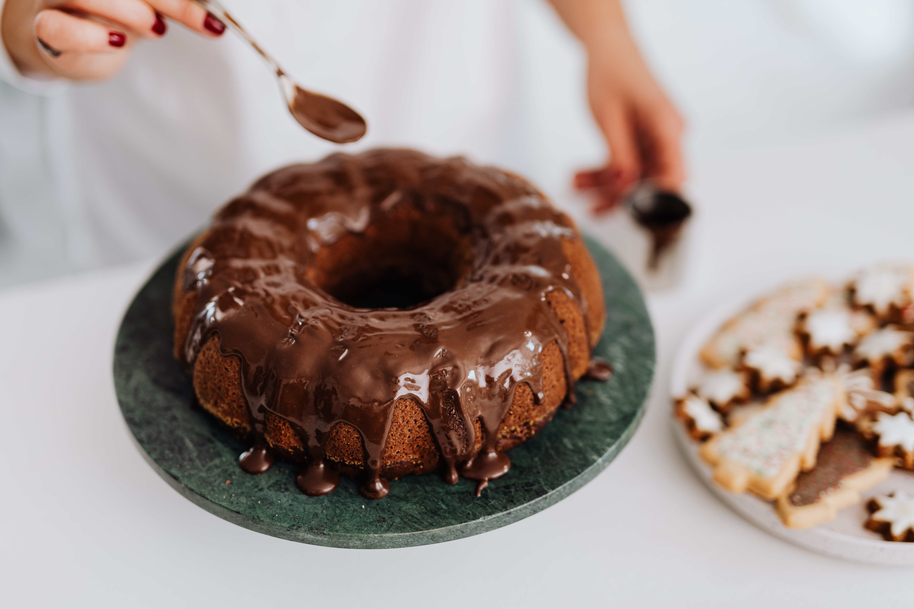

Bolo de Chocolate
Igredientes
- Massa:
- 3 ovos
- 1 e 1/2 xícara (chá) de açúcar
- 2 xícaras (chá) de farinha de trigo
- 1 xícara (chá) de chocolate em pó ou achocolatado
- 1/2 xícara (chá) de óleo
- 1 colher (sopa) de fermento em pó
- 1 pitada de sal
- 1 xícara (chá) de água quente
- Cobertura:
- 4 colheres (sopa) de leite
- 1/2 xícara (chá) de chocolate em pó
- 1 colher (sopa) de manteiga
- 1 xícara (chá) de açúcar

Modo de Preparo
- Massa:
- Em um liquidificador, bata os ovos, o açúcar, o óleo, o achocolatado e a farinha de trigo.
- Despeje a massa em uma tigela e adicione a água quente e o fermento, misturando bem.
- Despeje a massa em uma forma untada e asse em forno médio-alto (200° C), preaquecido, por 40 minutos.
- Desenforme ainda quente.
- Cobertura:
- Em uma panela, leve todos os ingredientes ao fogo até levantar fervura.
- Despeje ainda quente em cima do bolo.
- E assim está pronto o seu bolo, bom apetite